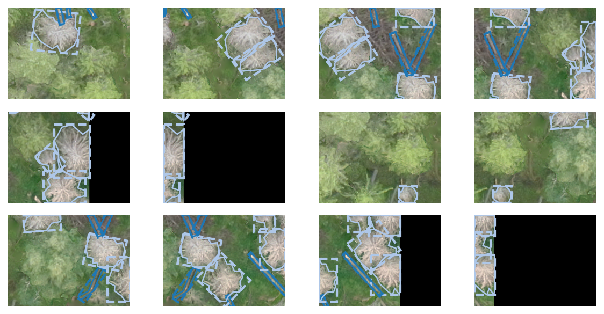
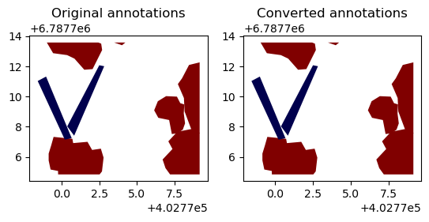
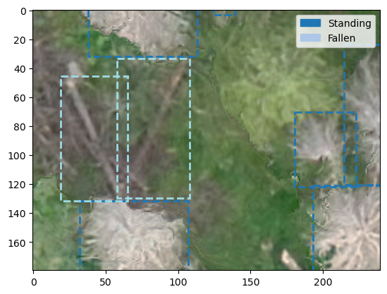
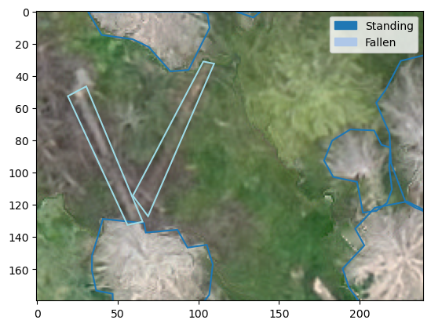

from geo2ml.plotting import *
from matplotlib import pyplot as pltImage data
Converting geospatial image and polygon data into object detection data formats
COCO conversions
Annotations in COCO style datasets are stored in a single json-file, which looks like this:
{
"info": {
"year": "<year_of_creation>",
"version": "<dataset_version>",
"description": "<description>",
"contributor": "<author>",
"url":" <url>",
"date_created": "<creation_date>"
},
"licenses": [
{
"url": "<url_to_license>",
"id": <license_id_number>,
"name" <"license_name>"
},
...
],
"images": [
{
"id": 0,
"license": "<license_id>",
"file_name": "<filename.ext>",
"height": "<height_in_px>",
"width": "<width_in_px>",
"date_captured": null
},
...
],
"annotations": [
{
"id": <annotation_id>,
"image_id": <corresponding_image_id>,
"category_id": <corresponding_cat_id>,
"bbox": [xmin, ymin, xdelta, ydelta],
"segmentation": [x0, y0, x1, y1, ...],
"area": <area_in_pixels>,
"is_crowd": <1 or 0>
},
...
],
"categories": [
{
"id": <cat_id>,
"name": "<cat_name>",
"supercategory": "<supercat_name>"
}
]
}Of these, images, annotations and categories are mandatory.
shp_to_coco
shp_to_coco (raster_path:pathlib.Path, shp_path:pathlib.Path, outpath:pathlib.Path, label_col:str, coco_categories:dict, coco_info:dict=None, coco_licenses:dict=None, min_bbox_area:int=0, rotated_bbox:bool=False, dataset_name:str=None)
Create a COCO style dataset from images in raster_path and corresponding polygons in shp_path, save annotations to outpath. shp_path can be either geopackage containing layers so that each layer corresponds to an image, or a directory containing multiple shp or geojson files, each corresponding to an image
Create an example dataset.
deadwood_categories = [
{'supercategory':'deadwood', 'id':1, 'name': 'Fallen'},
{'supercategory':'deadwood', 'id':2, 'name': 'Standing'},
]
coco_info = {'description': 'dummydataset for example purposes',
'version': 0.1,
'year': 2023,
'contributor': 'Janne Mäyrä',
'date_created': datetime.date.today().strftime("%Y/%m/%d")
}
coco_licenses = {}Convert the dataset to COCO format.
outpath = Path('example_data/tiles/')
shp_to_coco(raster_path=outpath/'images', shp_path=outpath/'vectors.gpkg', outpath=outpath, label_col='label',
dataset_name='coco_norm', coco_info=coco_info, coco_categories=deadwood_categories)data_path = Path('example_data/tiles/')
with open(data_path/'coco_norm.json') as f:
coco_data = json.load(f)
fig, axs = plt.subplots(3,4, figsize=(8,4), dpi=150)
for i, ax in enumerate(axs.flatten()):
plot_coco_instance(coco_data, i, data_path/'images', ax, show_labels=False, show_title=False)
plt.tight_layout()
plt.show()
It is also possible to save the dataset with rotated bounding boxes:
shp_to_coco(raster_path=outpath/'images', shp_path=outpath/'vectors', outpath=outpath, label_col='label',
dataset_name='coco_rot', coco_info=coco_info, coco_categories=deadwood_categories, rotated_bbox=True)with open(data_path/'coco_rot.json') as f:
coco_rot_data = json.load(f)
fig, axs = plt.subplots(3,4, figsize=(8,4), dpi=150)
for i, ax in enumerate(axs.flatten()):
plot_coco_instance(coco_rot_data, i, data_path/'images', ax, show_labels=False, show_title=False)
plt.tight_layout()
plt.show()
coco_to_shp
coco_to_shp (coco_data:pathlib.Path|str, outpath:pathlib.Path, raster_path:pathlib.Path, downsample_factor:int=1)
Generates georeferenced data from a dictionary with coco annotations. TODO handle multipolygons better
coco_to_shp converts COCO annotations back into georeferenced data.
coco_to_shp(outpath/'coco_norm.json', outpath/'predicted_vectors_coco', outpath/'images')fig, axs = plt.subplots(1,2, dpi=100)
orig_annos = gpd.read_file(outpath/'vectors/R0C3.geojson')
orig_annos.plot(ax=axs[0], column='label', cmap='seismic').set_title('Original annotations')
converted_annos = gpd.read_file(outpath/'predicted_vectors_coco/R0C3.geojson')
converted_annos.plot(ax=axs[1], column='label', cmap='seismic').set_title('Converted annotations')Text(0.5, 1.0, 'Converted annotations')
shp_to_coco_results
shp_to_coco_results (prediction_path:pathlib.Path, raster_path:pathlib.Path, coco_dict:pathlib.Path, outfile:pathlib.Path, label_col:str='label_id', rotated_bbox:bool=False)
Convert vector predictions into coco result format to be fed into COCO evaluator
prediction_path can be either geopackage containing layers so that each layer corresponds to an image, or a directory containing multiple shp or geojson files, each corresponding to an image
shp_to_coco_results can be used to convert shapefiles to COCO result format, which can then be read with pycocotools.coco.COCO.loadRes and further used with pycocotools.cocoeval.COCOeval. The difference between COCO annotations and COCO results is that COCO results must be in RLE format.
shp_to_coco_results(outpath/'predicted_vectors_coco', outpath/'images', outpath/'coco_norm.json', outpath/'coco_res.json',
label_col='label')
with open(outpath/'coco_res.json') as f:
res = json.load(f)
res[:3][{'image_id': 0,
'category_id': 'Standing',
'segmentation': {'size': [180, 240],
'counts': 'Qj8f0j45N3M2N2N3L3N3M2N2N3M2N3M2N2M3N1O21O0O100O101O0O10000O2OO001O1O001O10O01OO1O3N2M4M0O2O0O2N1010O2O2M2O1N2O0O0O1O100O10O0100O1O000O101O0O10001N10000O2O02N1O2O0O1N3lNYL7i3]OdL`0Z4M3M3M3L5I6Kjfa0'},
'score': 0.0},
{'image_id': 0,
'category_id': 'Fallen',
'segmentation': {'size': [180, 240],
'counts': 'h``01c55K4L5K4L5K5K4LO103M4L5J5L4L5K4Khdf0'},
'score': 0.0},
{'image_id': 0,
'category_id': 'Fallen',
'segmentation': {'size': [180, 240], 'counts': 'lVd08\\59G1OO10000O:Gkad0'},
'score': 0.0}]YOLO
Specifications of yolo format:
- The folder structure must be so that images are in a folder called
imagesand annotations in a folderlabels - Each image must have a corresponding annotation file with a same name aside from file type (
txt) - Each
txtcontains all annotations in separate rows- Bounding box annotation format is
classidx_centery_centerwidthheight - Polygon annotation format
classidxyxy…
- Bounding box annotation format is
- Coordinates are normalized between 0 and 1, so that origin is at upper left and (1,1) in bottom right
- Train/val/test -sets are collated in separate files, with the paths to image files
- Information is collated on a
yamlfile, wherepath: <path>is the dataset root dirtrain:,val:andtest:are either:- directories
- txt-files containing images
- list containing paths
- class names are saved like
names: 0: person 1: bicycle
shp_to_yolo
shp_to_yolo (raster_path:pathlib.Path, shp_path:pathlib.Path, outpath:pathlib.Path, label_col:str, names:list, ann_format:str='box', min_bbox_area:int=0, dataset_name:str=None)
Convert shapefiles in shp_path to YOLO style dataset. Creates a folder labels and dataset_name.yaml to outpath shp_path can be either geopackage containing layers so that each layer corresponds to an image, or a directory containing multiple shp or geojson files, each corresponding to a single image.
cats = ['Standing', 'Fallen']
shp_to_yolo(outpath/'images', outpath/'vectors', outpath, label_col='label',
names=cats, dataset_name='yolo_box')with open('example_data/tiles/labels/R0C3.txt') as f:
print(f.read())0 0.9110088813754431 0.8428313957277873 0.2105125 0.34474444444444446
0 0.8408608699710605 0.5332844921858052 0.1755499999999999 0.28715555555555555
0 0.9556222313151289 0.4008342356126551 0.12364166666666669 0.5387388888888888
0 0.2896889458001481 0.8741472392259093 0.3121958333333333 0.28441666666666665
1 0.17423794402298073 0.49100616152477305 0.19327083333333334 0.47804444444444444
1 0.3449062720847152 0.45305794267666205 0.21007916666666665 0.5340611111111111
0 0.31508289921660215 0.07376972745127364 0.3144166666666666 0.20641666666666666
0 0.5501041666666667 0.006870370370370371 0.06359166666666667 0.02061111111111111
fig, ax = plt.subplots(1,1)
plot_yolo_instance(Path('example_data/tiles/labels/R0C3.txt'),
Path('example_data/tiles/images/R0C3.tif'),
ax, ann_type='box',
classes=cats)
shp_to_yolo(outpath/'images', outpath/'vectors.gpkg', outpath, label_col='label',
ann_format='polygon', names=cats, dataset_name='yolo_poly')fig, ax = plt.subplots(1,1)
plot_yolo_instance(Path('example_data/tiles/labels/R0C3.txt'),
Path('example_data/tiles/images/R0C3.tif'),
ax, ann_type='polygon',
classes=cats)
yolo_to_shp
yolo_to_shp (prediction_path:pathlib.Path, raster_path:pathlib.Path, yolo_path:pathlib.Path|str, outpath:pathlib.Path, downsample_factor:int=1, ann_format:str='polygon')
Convert predicted files in predictions to georeferenced data based on files in images. ann_format is one of polygon, xyxy, xywh, xyxyn, xywhn.
yolo_to_shp(outpath/'labels', outpath/'images', outpath/'yolo_poly.yaml', outpath/'predicted_vectors_yolo')fig, axs = plt.subplots(1,2, dpi=100)
orig_annos = gpd.read_file(outpath/'vectors/R0C3.geojson')
orig_annos.plot(ax=axs[0], column='label', cmap='seismic').set_title('Original annotations')
converted_annos = gpd.read_file(outpath/'predicted_vectors_yolo/R0C3.geojson')
converted_annos.plot(ax=axs[1], column='label', cmap='seismic').set_title('Converted annotations')Text(0.5, 1.0, 'Converted annotations')